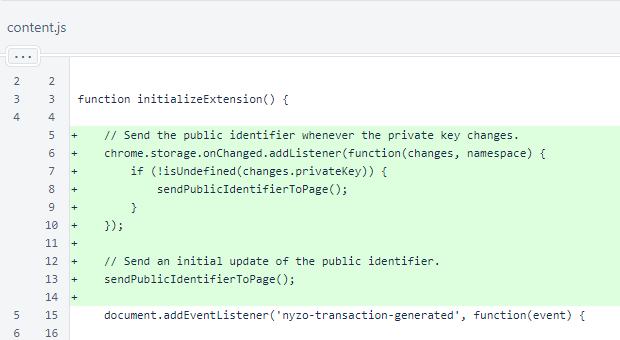
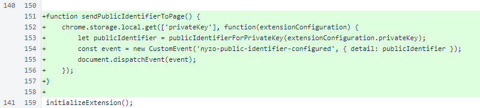
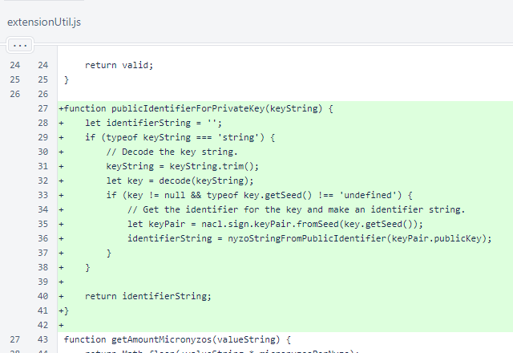

Nyzo Chrome extension version 6 (commit on GitHub) sends the extension configuration's public identifier to the page.
This version still does not place a rate limit on automatic transactions. Support for automatic transactions will not be submitted to the Chrome Web Store until such a limit is in place. To protect yourself if you choose to use this version of the extension, set a very small automatic transaction maximum (such as ∩0.000001) and use an account with a small balance.
In the initializeExtension() function of the content script, a listener was added to send the configured public identifier whenever the private key changes. The currently configured public identifier is also sent upon initialization.
The sendPublicIdentifierToPage() function gets the private key from storage, derives the public identifier, and sends an event to notify the page about the public identifier.
In the extensionUtil script, the new publicIdentifierForPrivateKey() function produces a public-identifier Nyzo string from the corresponding private-key Nyzo string. If the input is not a valid private-key Nyzo string, this function returns the empty string.
